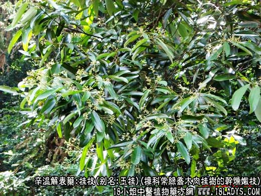
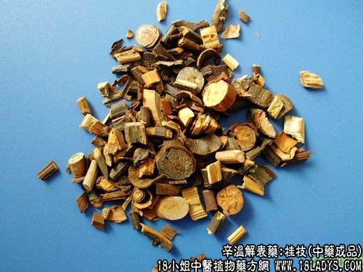
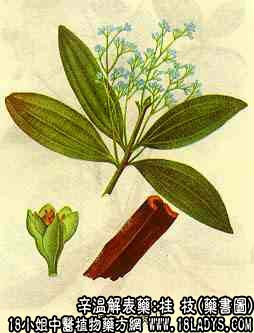

桂枝为常用中药。
来源：为樟科植物常绿乔木肉桂树的干燥嫩枝。多为栽培品。
产地：主产于广西、广东。
性状鉴别：桂枝细圆柱形，外皮紫红棕色，可见细小圆点状皮孔，质脆易折，断面红黄色，粗枝断面黄白色。有香气，味甜而辣，外皮味较浓。以枝条细嫩，色红棕无枯枝者为佳。
主要成分：含挥发油，其中主要含桂皮醛、桂皮乙酸酯等而无芳樟醇。
药理作用：1、解热。桂皮醛能解热，能使皮肤血管扩张，调整血液循环，使血液流向体表，有利于散热和发汗，这种作用也就是所谓温经通络，透发热气。但是，桂枝的解热和发汗作用是很缓和的，所以，中医的经验认为：桂枝要配其它解表药才能发汗，而配收敛药又能止汗。
2、镇痛。作用于大脑感觉中枢，提高疼痛阈而收痛效果。在治疗因头部管痉挛而引起的头痛时，可能使血管舒张而缓解头痛；还能解除内脏平滑肌痉挛，缓解腹痛。
3、健胃。能促进唾液和胃液分泌，帮助消化。
4、抗菌。体外实验桂枝乙醇浸液对金黄色葡萄球菌、伤寒杆菌等有显著的抗菌作用。
5、抗病毒菌。体外试验桂枝煎剂对流感病毒有强力的抑制作用。
6、抗真菌。体外试验队革兰氏黄色癣菌等致病性真菌有抑制作用。
炮制：切片或切咀生用。
性味：辛、甘、温。
归经：入心、肺、膀胱经。
功能：助阳解表，温通经脉，温化水湿。
主治：风寒感冒，风寒湿痹，经闭腹痛，痰饮蓄水，适用于感冒风寒之表虚自汗者。
临床应用：1、用于治疗外感风寒，与麻黄比较，桂枝的发汗作用较和缓，往往要加生姜配伍，并在服药后喝热粥，才能助其发汗，方如桂枝汤。特别适宜于平素体质虚弱而新患感冒的患者。由于桂枝能旺盛血行，属于温热药物，所以，在风温等热性传染病时，有高热、脉洪大而汗不出者，不宜用桂枝，如果错用了，即使只用上0.6~0.9g，也会引起鼻出血。至于原来已有口舌干燥、吐血、咯血等所谓内火的患者，更不宜用桂枝。
2、用于治疗风湿痹痛，尤其肩臂肢节疼痛（风湿性关节炎、神经痛等），取其有温经止痛作用。对于平素体质虚弱又因对外感风寒而引起的痹痛，更为合适，有时单用桂枝汤就能收效；风寒较重的，多余麻黄、附子等配用，方入桂枝附子汤。
3、用于治疗水湿停留所致的水肿、痰饮（例如慢性支气管炎时间呼吸道有大量分泌物积存）。传统经验认为：桂枝通能阳利水（或化气行水），故能治疗上述的水肿、痰饮、从现代医学观点看，“阳”和“气”都是代表功能的意思。通阳利水货行气化水实际上是促进血液循环的功能，加强发汗和利尿的作用，从而减轻局部体液的郁积，桂枝是具有着一作用的。但往往要配合利水、化湿的药物，如茯苓、白术等，才能收到明显的效果，方入苓桂术甘汤。
除上述三项用途外，桂枝在妇科和其它杂病中应用和广。例如与当归、白芍等合用可活血通经，治疗虚寒性月经不调、闭经等（注意：月经够多者时忌用）；配甘草可治心悸；对有腹痛的虚寒下痢（如慢性结肠炎），在止泻方剂内加用桂枝可以止痛；在南方，当夏天觉身体湿因、肢体重坠时，用桂枝煎水洗澡后，可觉轻快。至于用桂枝汤加减治疗杂病，其用途就更广泛了。
用量：常用量3~6g，用于解表的，少者2.4g至4.5g即可，一般用6g较普遍。在治疗风湿关节痛时，有时要用较大剂量，甚至重用至30~45g，但要视具体情况和根据临床经验而定。
处方举例：1、桂枝汤（《伤寒论》）。桂枝6g，白芍9g，炙甘草6g，生姜9g，大枣4枚，水煎服。
2、桂枝附子汤（《金匮要略》）。桂枝9g，白芍9g，附子9g，炙甘草6g，大枣4枚，生姜9g，水煎服。
3、苓桂术甘汤（《伤寒论》）。桂枝9g，茯苓15g，白术12g，炙甘草6g，水煎服。
注：1、肉桂子为着生用桂枝顶端未成熟的幼嫩果实及宿存花萼，宿萼膨大呈倒圆锥形，常带有短柄形似“公丁香”故又名桂丁香。棕黑色显粗糙，有不规则的纵沟棱数条，顶端有一圆形小凹眼，露出部分未成熟的幼果，黄棕色或棕色。质坚实。气芳香，味甘辛。功能温中止痛，主治寒凉性胃腹疼痛。
2、桂柄为较幼嫩的桂叶短柄，呈半圆柱型或扁圆柱形，长1~2厘米，粗约5毫米。棕黑色或棕红色，质坚实，气味功能与桂枝相同唯含油量较多，甘辛气味较胜。